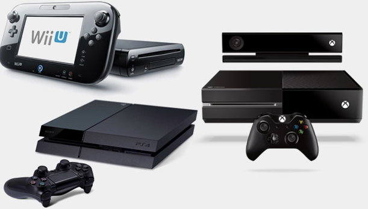
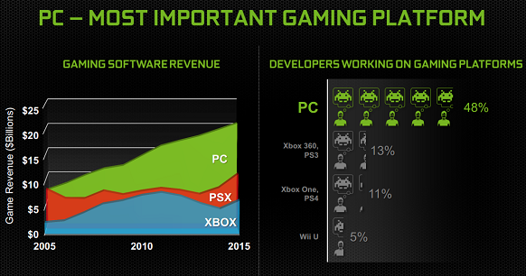

There are a gigantic amounts of gaming platforms that are currently being purchased and played in the world today. These gaming plaforms can be cheap or expensive depending what the platform's features included.
There are a number of consoles that are very popular amongst the gaming community around the world. These consoles include Xbox One, Playstation 4, gaming PC's (a number of gaming PC'S include Acer and many others) and Nintendo. These gaming platforms have a target audience of people from 10 years old up until 30 years of age. This is a massive target audience for the companies who make these gaming platforms.
There are a number of gaming platforms that have been released since 2012. These consoles have been upgraded by the companies who made them to further enhance the gaming experience for the users who play games on their gaming platforms. These gaming platforms include: Xbox One, Playstation 4, Nintendo Switch and Wii U.
A newly released gaming platform is the virtual reality (VR) headset, this was released and became popular in 2015 up to the present day. These headsets work when there is a camera connected to the headset to record where you are going, handheld controllers are used to interact with your surroundings within the game and the headset is used as a screen to view what you are doing within the game.
The headset, controllers and the cameras are connected up to a computer since the game that is compatiable with VR has to be opened on a gaming platform. Most newly released games are compatiable with VR as it is a new market for gaming and maybe the future of playing games in years to come.